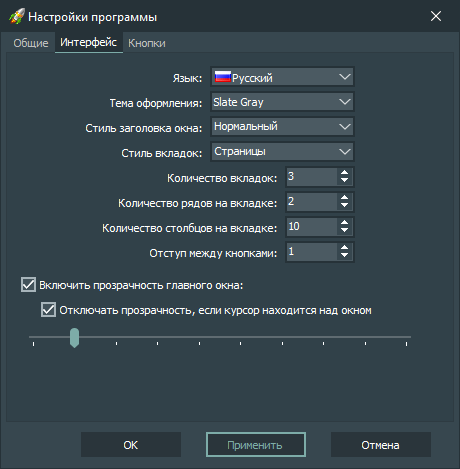

Настройки интерфейса:
-
Язык
Устанавливает язык интерфейса приложения.
-
Тема оформления
Устанавливает тему оформления интерфейса приложения.
-
Стиль заголовка окна
Устанавливает стиль заголовка главного окна приложения.
-
Стиль вкладок
Устанавливает стиль вкладок в главном окне приложения.
-
Количество вкладок
Устанавливает количество вкладок в главном окне приложения.
-
Количество рядов на вкладке
Устанавливает количество рядов на вкладке.
-
Количество столбцов на вкладке
Устанавливает количество столбцов на вкладке.
-
Отступ между кнопками
Устанавливает величину отступа между кнопками на вкладке.
-
Включить прозрачность главного окна
Включает и устанавливает коэффициент прозрачности главного окна.
-
Размер кнопок
Устанавливает размеры кнопок на вкладке.
-
Ширина
Устанавливает ширину кнопки на вкладке.
-
Высота
Устанавливает высоту кнопки на вкладке.